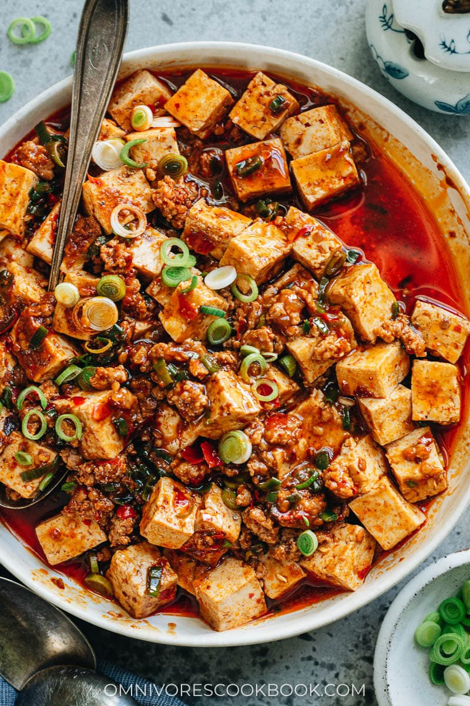

Mapo Tofu

Description:
Traditional spicy tofu dish from Sichuan, China.
It is simple and quick to make and amazing with hot bowl of steamed rice.
Ingredients:
- Tofu(soft or hard).
- Minced pork(can be replaced with minced chicken, beef or prawns.
- Spring onion.
- Minced garlic.
- Dubanjang(Chinese chilli bean paste).
- Soy sauce.
- Corn flour.
- Chinese cooking wine.
- Sichuan pepper.
Steps:
- Boil water and add diced tofu, boil until tofu is hot. Put on low temperature. Tofu must be hot when adding to the pan later
- In a hot pan or wok add oil and cooked minced meat until cook and add dash of chinese cooking wine. Once cooked put mince aside.
- In the same pan add 3 tablespoon of oil, dash of garlic and chopped spring onion. Once sizzling add dash of soy sauce and dubanjang.
- Add prepared minced meat cook together and dash half cup of water or stock (chicken or vege). Wait until boil.
- Drain the tofu and add tofu to the pan. Wait until boil.
- Prepare 3 tablespoon of water and 1 tablespoon of corn flour and mix well.This mixture will thicken up the sauce
- Reduce temperature in the pan and slowly add the corn flour mixture to pan while gentley stiring until you get the desired thickness.
- Add rest of chopped spring onion and turn off the heat. Place in a plate and sprinkle pepper on top.
- Serve with hot steamed rice.